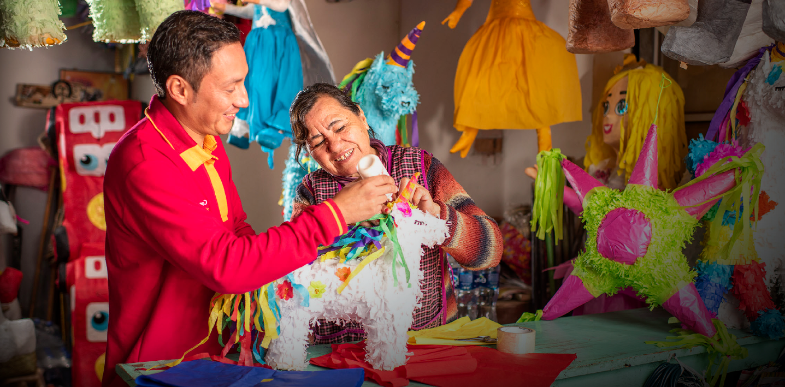

Primera infancia
Con el propósito de contribuir a un mejor futuro, apoyamos el desarrollo integral de niños de 0 a 6 años, al ser la etapa más importante de la infancia porque es en la que desarrollan sus capacidades físicas, intelectuales y emocionales.

Contenidos para la Primera Infancia
Acompañados de expertos, sensibilizamos a distintas audiencias sobre la importancia del cuidado sensible y de un estilo de educación que fomente las habilidades, capacidades y actitudes necesarias para la vida, siempre desde el respeto y el cariño incondicional hacia los niños.
Pacto por la Primera Infancia
Colaboramos en esta iniciativa ciudadana cuyo objetivo es hacer de la primera infancia una prioridad nacional. Junto con 440 organizaciones integrantes, buscamos incidir en políticas públicas.
Colectivo Primera Infancia
En conjunto con Fundación FEMSA, Fundación Cinépolis, Fundación Lego, Fundación Televisa y Fundación CMR, por segundo año consecutivo trabajamos para que los niños y niñas en México tengan un desarrollo integral pleno, posicionando a la primera infancia como un tema prioritario para el crecimiento de México.